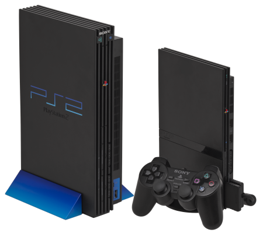

O Playstation 2
Março de 2000
Era lançado o Playstation 2 um console da sexta geração que era muito aguardado por conta do sucesso do seu antecessor playstation 1 que fez com que o console até hoje seja campeão de vendas no mundo com mais de 155 milhões de unidades vendidas e não seria diferente aqui no Brasil onde o console fez muito sucesso, onde boa parte dos jovens dos anos 2000 já tiveram ou até hoje tenham um em sua casa.

Sobre o console:
Com uma vasta biblioteca de jogos o playstation 2 tem aproximadamente mais de 4000 jogos oficiais, a maioria sendo lançado em todas as regiões ja outros se tornaram exclusivos de suas regiões sendo:
- NTSC-UC (America do norte)
- NTSC-JP (Japão)
- PAL (Europa e Oceania)
O console teve 2 versões a primeira chamada de Playstation 2 FAT e a segunda Playstation 2 slim lançado em 2007 com algumas melhorias e deixando o console mais compacto comparando com sua primeira versão, mas apesar de ser mais compacto a primeira versão tinha a vantagem de ser retrocompativel sendo possivel jogar os jogos do seu antecessor Playstation 1.
Playstation 2 FAT e SLIM
Jogos de Terror
A época de ouro dos games de terror antigos está na sexta geração com o Playstation 2, Xbox e PC. Com jogos como: